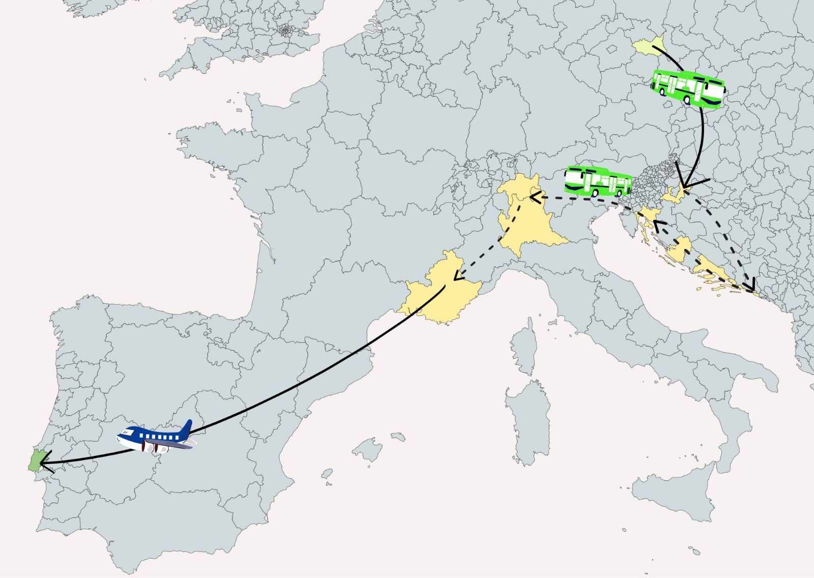
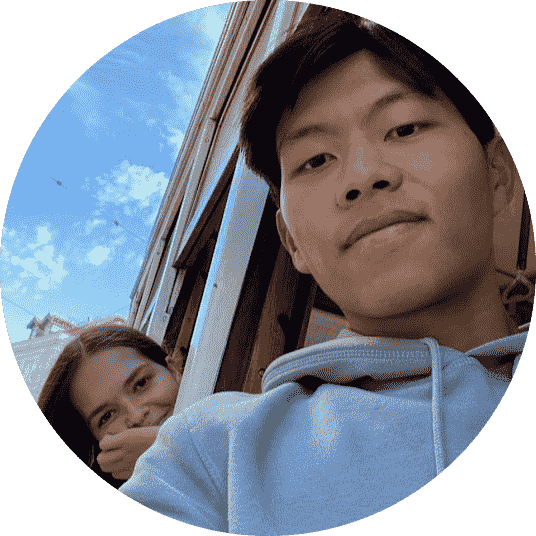

Welcome to our site! We're Joana and João from Portugal, currently studying in the Czech Republic as part of the Erasmus program. Our shared passion for discovering the world and having adventures has led us to embark on a unique journey, slowly making our way back home after these 5 months in the Czech Republic, crossing different countries along the way.
Our trip will start with exploring the stunning coast of Croatia, where we plan to enjoy the sun and jump from island to island. From there, we plan to venture to Italy to enjoy the country's delicious cuisine and artwork.
Next, we'll take a day trip to Switzerland to admire the breathtaking scenery of the lakes and experience the country's famous chocolate and cheese. And finally, we'll end our trip in France, where we'll enjoy the stunning beaches and historic architecture in Nice and Marseille.
This website will help us get an organized overview of what we want to see, how to get there, how many days we need and how much money.
 